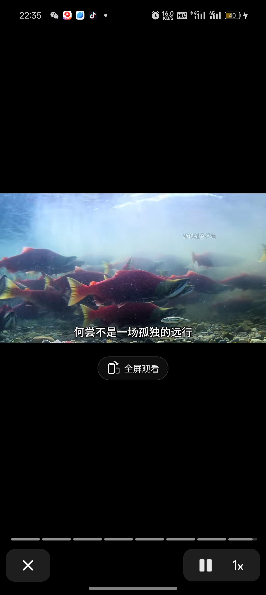

我也不知道长大她会不会送我这些包哈哈哈哈哈哈哈
美美！壮壮不在自己屋里、他去哪了？[捂脸]
王强！喜欢这个系列 给我更下去[流泪][流泪][流泪]
美美是唯一把 粉丝 真当 家人 的博主 哈哈哈哈哈
太辛苦了，这么大就开始工作了[流泪][流泪][流泪]
《小小的勇气》是人文纪实类节目，赵露思不仅零片酬，还给当地村民捐赠很多物品。 我们接下来不用理会无理取闹的声音，跟着露思一起感受特色民俗文化，体验非遗传统技能。用镜头记录平凡的伟大，获得自我成长的力量。💪🏻
写的好有文化啊，但是又不矫情词语繁杂堆砌，如果这个人在我高中的时候上课的时候放大家包认真看，下课的时候肯定同学们还会有人在讨论[精选][精选][小鼓掌]
鲑鱼你好样的[流泪][流泪]
看鲑鱼的时候怕鲑鱼被熊吃掉，看熊的时候又怕熊饿到[流泪][流泪]
皮肤从银白褪为猩红，仿佛被故乡的火烧透了鳞甲，他们觉得我变得丑陋，可这具残破的身体恰恰是献给故土最虔诚的祭品[流泪]
吃！吃的就是鲑鱼[赞]
这个文案，谁懂，感觉是高考作文接近满分的水平
本来挺伤感的，到底是谁在搜鲑鱼肉好吃吗？！[微笑]
鲑鱼，归鱼
太感动了，鲑鱼你真是好样的[流泪][赞]，对了我有鲑鱼收款码，有没有人想捐的[流泪]
谁懂这张图的宿命感。。[微笑]少小离家老大回。。俩个时代的擦肩而过。 
麻哈鱼跳龙门，来年风调雨又顺[呲牙]
虽然你的文案很出众，我很感动鲑鱼之途，那么我问你你这个头像怎么回事[微笑]
这熊吃的是这个吗[发呆]
看得出来这位阿姨教书时绝对是高级教师中高级，她带出来的学生肯定非常优秀的[赞][赞][赞]
那些说不结婚老了很惨的来看看
长寿秘诀就是单身[衰]
高中班主任王老师好[赞]您曾经的语文课代表向您问好[呲牙]祝您身体健康，万事吉祥！
她的心态很好说话逻辑性强，不像八十多的老人
青春不是年华，青春是心境[比心]
你的人生是她想要的来生❤️
人还是要读书啊 说话好愿意让人听下去[猪头]
阿姨80多了，这个状态都非常好了，眼不花，耳不聋，大脑不痴呆，口齿清晰，能自理。
朴槿惠终身未嫁，嫁给了大韩民国，您终身未嫁，嫁给了中国的教育事业，真让人敬佩[拳头]
没老公孩子 果然年轻
我比较孤僻，整天宅家，也想走出去，但是不知道去哪里，也没朋友。
天下谁人不识君
8月1号那天我都不知道我怎么那么勇敢看完全程比赛
2024封神名场面必须是这个东哥举头望明月 ，张本低头思故乡
滴血认亲，八王议政，金铁兽救主这三集哪怕赶火车赶飞机路过都得看一会
弘昼：这当皇子啊[看]你可装傻，但不能真菜[看]
八爷明明知道丰台大营的唯一变数就是十三爷，都不牵制一下十三爷就说有九成胜算
老四：你给朕坐回去！ 老十：嗯，好勒[尬笑]
这段八王癔症狗来了都得看完
我爸认识的一个人天天在家开着空气净化器，然后得了肺癌[微笑]医生说是他家空气太干净，出门以后身体不适应[微笑]
叶炫清老师！！！太好听了两位老师
高睿疑似被单方面分手💔[比心]
什么时候背着我见面了你俩[你不大行]
查出来了，必须让他整个家庭都倾家荡产，才有威慑力。
大哥就是大哥 哭的时候都要坐到主位哭
老二:今儿个，本宫就要当着母后的面，杀杀你这嫡长子的威风[发怒]
为什么看到哥哥哭就想笑哈哈哈哈哈
难怪大厅不装电视的，这么有节目
老臣力荐二皇子为太子
经常打吗 经常打我就关注了
胜利者mvp结算场面[比心]
哥哥在主位气急败坏的样子，好像古装剧里愚笨太子被二皇子愚弄之后的感觉！傻傻的[捂脸]
多热闹[捂脸]，世子之争向来如此。小的时候兄弟俩打的死去活来。等兄弟俩长大娶了媳妇两个妯娌再明争暗斗，两个儿媳妇在生四个孙子继续打的死去活来[呲牙][呲牙]。最后两个老的再赚个偏心和老不死的[捂脸]。想想都刺激[捂脸]
怎么感觉弟弟每次穿得衣服都帅气点呢。[尬笑]
老二够狠啊，决定一击致命，让哥哥变成姐姐[比心]
@2y喵 第一次直观的感受到第五是恐怖游戏
高中第一次玩因为心脏的声音太吓人被劝退
最后的晚餐✘ 最后一顿席✔
单休=上6天休一天，双休=上2.5天休一天。很少人能注意到，这世界就是这么匪夷所思，单休跟双休，表面上就上五天和六天的区别，换个角度看真的差距很大。单休比双休多上七年班，而恰恰双休的企事业单位，公积金社保方面方面普遍比普通民营多。劳动时长的不公加收入回报的不公，双向叠加[暗中观察]
那双休和高薪总有一个吧[捂脸][赞]
信是金子总会发光的这辈子有了 [微笑]
我明白了，为什么另一部电视剧铁齿铜牙纪晓岚里有和珅没有刘墉了，因为那时候纪晓岚还没当皇上[奸笑]
感觉这个剧里乾隆天天不干工作只知道玩乐[捂脸]
你们的小明王
Read more: